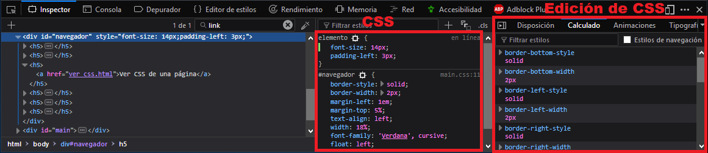
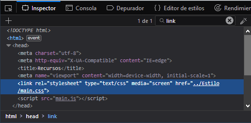
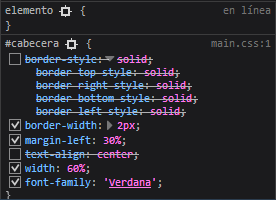
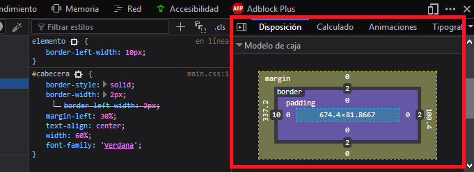
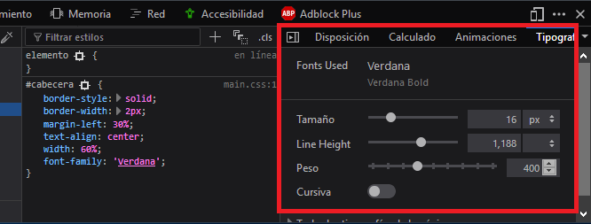

Para ver el css de una página en Firefox se hace de la misma forma que para ver el código HTML:
- Desde la barra de menú del navegador: Desarrollo web > Inspector.
- Pulsando la tecla F12.
- Utilizando la ocmbinación de teclas Ctrl + Mayús + C.
- Si deseamos ver el código de una parte concreta de la web: Seleccionamos la parte deseada > Click derecho > Inspeccionar elemento.
Usando cualquiera de las anteriores se desplegará el inspector y podremos ver el CSS de la página a la derecha del HTML, y más a la derecha vemos otra ventana con más detalles del CSS y algunas opciones para manipularlo.

También podemos ver las diferentes hojas de estilo que uitiliza la página si escribimos "link" en el buscador del inspector:

Hay varias formas de editar el CSS de nuestra página desde el inspector para poder ver los cambios en tiempo real y diseñar así el aspecto de nuestra página más cómodamente, la principal forma de hacerlo es haciendo doble click en el código y editándolo, también podemos activar y desactivar atributos haciendo click en el tick que hay a su izquierda:

También podemos modificar el margen, borde y padding de los elementos de forma muy visual en la pestaña Disposición:

Podemos hacer lo mismo con las distintas fuentes de la página desde la ventana tipografía:

Estas herramientas son muy útiles para modificar el aspecto de nuestra página con facilidad, pero hay que tener en cuenta que las modificaciones que se realizan aquí son para pruebas, ya que no cambiarán el aspecto real de la página, para ello hay que modificar la condifuración en nuestro archivo CSS.